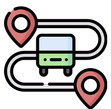

<mat-toolbar class="main-container">
  <mat-toolbar-row>
    <a routerLink="/"></a>
    <div class="links">
      <a routerLink="/desplazarse">Desplazarse</a>
      <a routerLink="/foro">Foro</a>
      <a routerLink="/soporte">Soporte</a>
    </div>
    <span class="example-spacer"></span>
    <div class="buttons">
      <button mat-raised-button>
        INGRESAR
      </button>
      <button mat-raised-button>
       REGISTRARSE
      </button>
    </div>
  </mat-toolbar-row>
</mat-toolbar>

